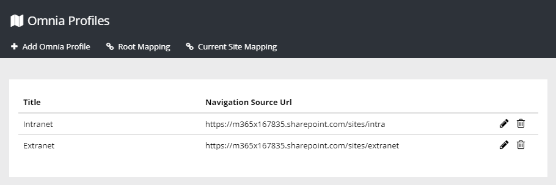
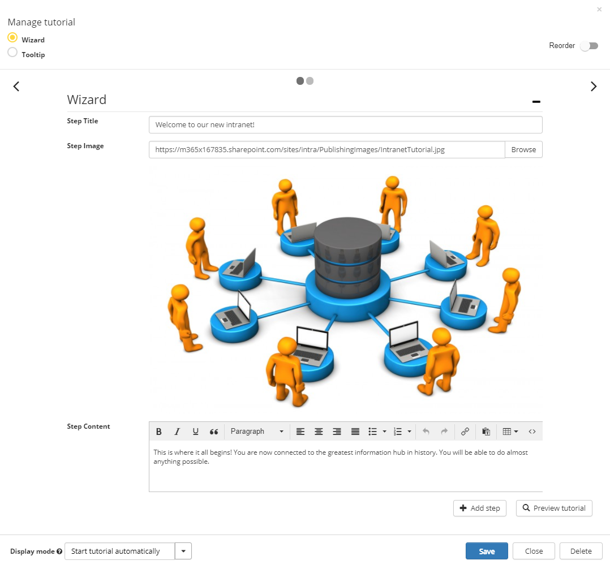
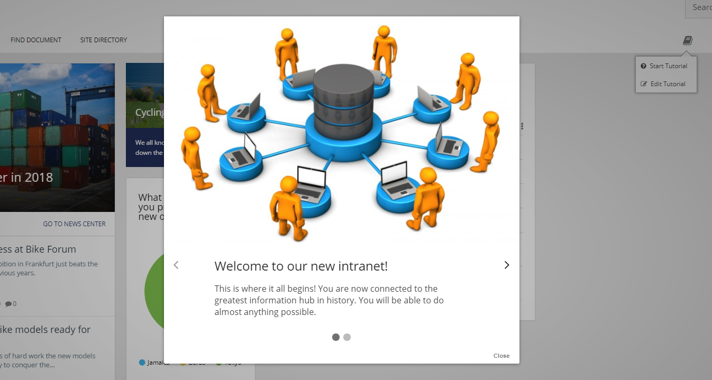
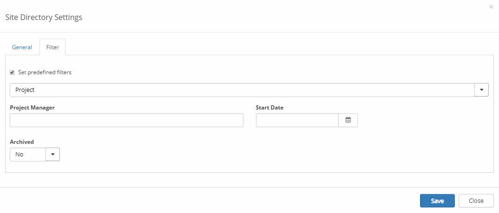
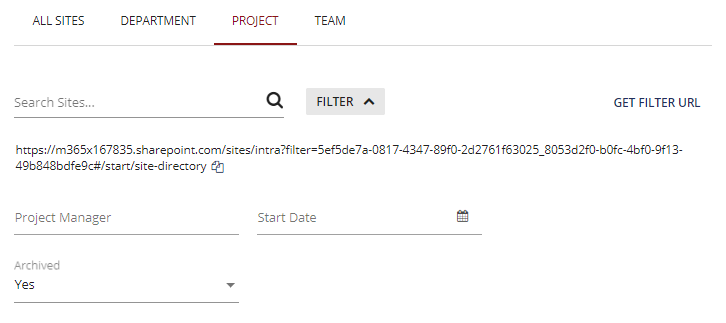

Omnia Foundation - January 2018
New Features
Omnia Profiles
A new feature in Omnia makes it possible to split a tenant into different profiles.
Profiles can be used to create different publishing portals for different needs, for example
Intranet and Extranet or profiles for different companies sharing the same tenant.

Improved Tutorial
The administrative UI for tutorials has been updated to make it easier to create tutorials.

It is also possible to create a new type of tutorial type, a wizard. A wizard tutorial can be used to
give an introduction to a specific part of the solution without connecting it to certain parts
of the page. The wizard will show up in the middle of the page.

Predefined Filters in Search Directory
It is possible to set a predefined filter in the Site Directory block.

The predefined filter can be used to set the scope of the directory. For example, it can be
used to create a project only directory.
It is also possible to filter the Search Directory and get a filter url.

If you use this url, the Site Directory can be accessed with a default filter.
Bug Fixes
- Fixed issue with empty site titles in My Sites navigation due to a general change in the SharePoint search index online.
- Fixed issue with Office 365 groups appearing two times in the People/Group Picker.
- Term Picker now shows the complete path to the selected term to avoid the confusion when you have two terms with the same label in a term set.
- When a new page layout was deployed using a feature, it did not automatically appear in the list of available layouts. This has been fixed.
- Fixed problem with CSS style in Omnia making some out of the box web parts in SharePoint look bad.
- When going into edit mode, the Newsfeed block always says "Sorry, only one user feed can be processed per page". This has been fixed.
- Certain types of SharePoint tasks did not end up in the My Tasks block because it was lacking a Content Class in the search index. This has been fixed.
- Better rendering of Newsfeed items in Quick Search.
- Fixed problem in SharePoint 2013 with display names of people in e-mails showing the user name instead of display name.
- Fixed problem in SharePoint 2013 with missing About me link when on quick pages.
- Fixed issue with published notification panel changes not being shown until the page was refreshed.
- Changed quick search to allow search over web applications in SharePoint 2013/2016.
January 2018 Patch 1 (1.0.9855)
- Fixed issue that could happen randomly when provisioning site properties to Office 365 groups.
- Made sure that the controlSettingsService API is backward compatible after a breaking change.
- Fixed an issue with the People and Group picker not showing all available security groups.